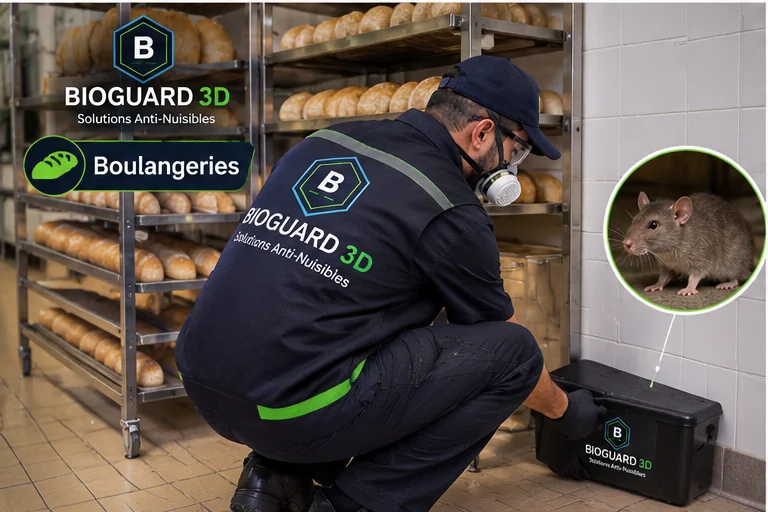

Évaluer
Comprendre le problème, les zones exposées et vos priorités.
BIOGUARD 3D · Rongeurs
Inspection des accès, identification des indices d’activité, plan d’action ciblé et conseils de prévention.
Rabat · Salé · Témara · Kénitra, selon disponibilité

Notre approche
Chaque lieu a ses contraintes. Notre équipe technique évalue les besoins avant de proposer la méthode adaptée.
Comprendre le problème, les zones exposées et vos priorités.
Définir une intervention ciblée et communiquer les consignes utiles.
Partager les recommandations et organiser le suivi lorsque nécessaire.
Pour les professionnels et particuliers
Pour les établissements professionnels, les documents d’intervention et les modalités de suivi sont définis selon la prestation convenue. Une attestation de passage peut être remise pour un passage réellement effectué, avec des informations exactes sur l’intervention.
Découvrir nos solutions professionnelles →Indiquez votre ville, votre type de local et le problème rencontré. Nous vous orienterons vers la suite adaptée.
☎ 06 75 31 13 17Envoyer un e-mailContactez BIOGUARD 3D pour discuter de votre situation.